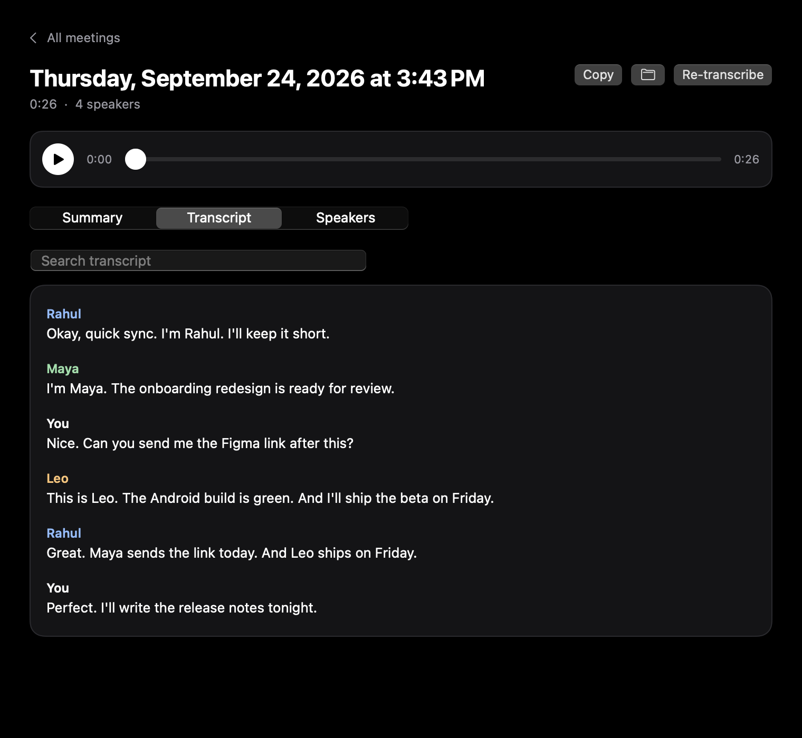

bolkit · meetings
who said that?
Bolkit splits every call by voice.
On Zoom, or around one table.
You
Rahul
Maya
Leo
the real transcript
It names people when they say it.
"I'm Maya." "This is Leo." Nobody types a name.

an 11-minute call · on the mac
11:00
transcribed, split by speaker, named and summed up · measured on an 18 GB MacBook
Nothing leaves your Mac.
Bolkit
free for Mac
· github.com/kumard3/scribe